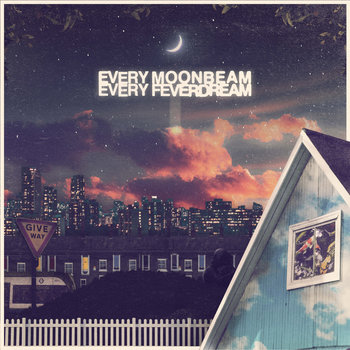

official site
go home
bitdex
experience
music
select style...
dark
light
discography
my favourite albums!! wip
flower through concrete

every moonbeam, every feverdream
how to build an ocean: instructions

 how to build an ocean: instructionshow to build an ocean: instructions
how to build an ocean: instructionshow to build an ocean: instructions